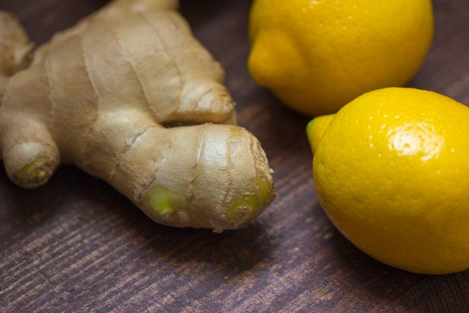
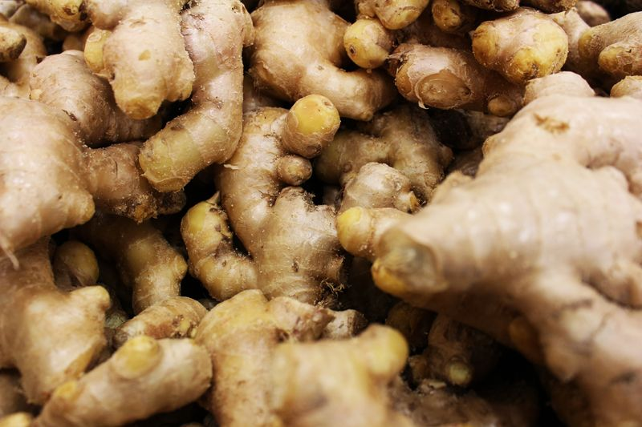
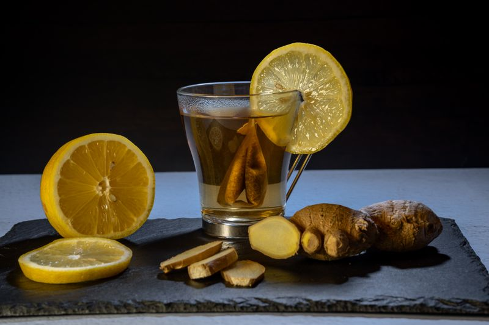

Gingembre Granulé Séché




Le Gingembre Granulé Séché ORGA_ME est un produit à base de gingembre spécialement transformé pour offrir une saveur puissante et un arôme durable. La racine de gingembre est récoltée à pleine maturité auprès de petites fermes en Afrique de l'Ouest, puis soigneusement lavée, pelée et tranchée en fines lamelles avant de subir un processus de séchage contrôlé. Le séchage élimine l'humidité tout en concentrant les gingérols et shogaols naturels qui confèrent au gingembre sa chaleur caractéristique et ses propriétés bénéfiques pour la santé. Après séchage, les morceaux sont granulés en une texture grossière qui retient les composés actifs tout en rendant le gingembre facile à doser et à utiliser. Ce produit est idéal pour les clients recherchant la chaleur riche et terreuse du gingembre dans une forme pratique et prête à l'emploi, pouvant être incorporée aussi bien dans des préparations culinaires que dans des routines de bien-être. Chaque lot est soumis à des tests de qualité pour garantir une puissance et une fraîcheur constantes.
Bénéfices pour le corps
Le gingembre granulé séché soutient la digestion en favorisant la libération d'enzymes digestives et en aidant à atténuer les sensations de lourdeur. En tant qu'épice réchauffante, il est souvent utilisé pour apporter du confort pendant les périodes plus fraîches et soutenir une circulation saine. Ses composés actifs aident à maintenir un équilibre inflammatoire normal et fournissent un soutien antioxydant dans tout le corps. Le processus de séchage concentre en fait ces composés bénéfiques, rendant le gingembre séché plus puissant que le gingembre frais à poids égal pour certaines applications thérapeutiques.
Ce format de gingembre est excellent à ajouter dans les tisanes, bouillons ou eau chaude pour créer une boisson réchauffante douce. Il se marie également à merveille dans les sauces, marinades, smoothies et porridges. Le processus de séchage concentre la saveur tout en préservant les gingérols et shogaols bénéfiques, rendant ce produit particulièrement efficace pour un soutien herbal quotidien. De nombreux utilisateurs constatent qu'une tasse de thé au gingembre granulé séché le matin aide à réveiller le système digestif et fournit une énergie stable tout au long de la journée.
Pour le soutien immunitaire, le gingembre est l'une des herbes les plus fiables car il aide le corps à s'adapter aux changements saisonniers et soutient le système respiratoire. L'utilisation régulière de gingembre granulé séché peut aider à maintenir l'énergie, réduire les légers inconforts après les repas et favoriser un sentiment de vitalité générale. La nature réchauffante du gingembre favorise également une transpiration saine, ce qui soutient les processus naturels de détoxification du corps et aide à maintenir un environnement interne équilibré.
En plus du soutien digestif et circulatoire, le gingembre granulé séché favorise le confort articulaire en encourageant la réponse naturelle du corps à l'inflammation occasionnelle. Il est également apprécié pour sa capacité à améliorer l'humeur et la clarté mentale lorsqu'il est utilisé dans le cadre d'une routine de bien-être quotidienne. La médecine traditionnelle a longtemps reconnu la capacité du gingembre à soutenir la santé cardiovasculaire en maintenant une circulation sanguine saine et en favorisant la fonction cardiaque. Le format granulé permet un dosage précis, ce qui permet de l'incorporer facilement dans toute routine quotidienne.
Comment utiliser
Ajoutez une cuillère à café dans de l'eau chaude, du thé, des soupes, des sauces ou des pâtisseries. Laissez infuser 5 à 10 minutes pour libérer toute la saveur et les nutriments. Utilisez une à deux fois par jour pour un soutien continu. Pour une infusion plus forte, augmentez la quantité ou le temps d'infusion selon votre préférence. La texture grossière signifie que les granules continueront à libérer leur saveur tout au long du processus d'infusion.
Pour un thé au gingembre traditionnel, combinez une cuillère à café de gingembre granulé séché avec 250 ml d'eau bouillante. Couvrez et laissez infuser 7 à 10 minutes, puis filtrez à travers une passoire fine. Ajoutez du miel, du citron ou de la cannelle pour rehausser la saveur. Le thé peut être dégusté chaud ou rafraîchi sur glace pour une boisson estivale rafraîchissante. Conservez dans un contenant hermétique dans un endroit frais et sec à l'abri de la lumière directe du soleil.
Ingrédients
100% racine de gingembre séchée et granulée (Zingiber officinale) — aucun additif, aucun conservateur, aucune saveur artificielle.